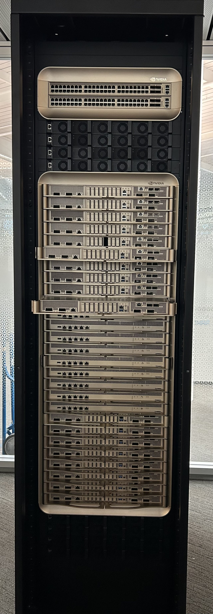
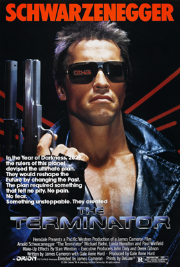

Chips
Diseñan el procesador que hace la cuenta
NVIDIA 66%Google TPUAmazon Trainium
Trabajo práctico modelo · Laboratorio de Métodos Cuantitativos · FCE UBA
Data centers de inteligencia artificial: potencia, energía, dinero, poder de mercado y un escenario para Argentina.
Juan Ignacio Da Torre · Joaquín Romano
Para empezar · ¿qué es un data center?


Fotos: BalticServers.com (CC BY-SA 3.0), Pokiiri (CC BY-SA 4.0), Rsparks3 (CC0) · Wikimedia Commons.
¿Y qué hace una IA con todo eso?
Un modelo de lenguaje es una función con cientos de miles de millones de parámetros. Entrenarlo es encontrar los valores que mejor predicen la próxima palabra: como una regresión, pero gigante.
Cada chip hace multiplicaciones de matrices sin parar, y cada multiplicación consume energía y genera calor. Por cada 100 MW de chips hacen falta unos 30 MW más para enfriar.
El problema
En octubre de 2025, OpenAI y Sur Energy firmaron una carta de intención por un data center de 500 MW en la Patagonia (Stargate Argentina), por USD 25.000 millones bajo el RIGI. Todavía no tiene sitio ni obra.
Pregunta: ¿cuánta electricidad demandan estos data centers, a qué ritmo crece, cuánto cuesta y qué implicaría uno de 500 MW en Argentina?
La cadena de valor · quién es quién
Diseñan el procesador que hace la cuenta
Construyen y operan las instalaciones
Entrenan los modelos y los venden
Fuente: Epoch AI (dueños, usuarios y diseñadores de chips que figuran en la base). GW = potencia operativa; DC = cantidad de data centers donde aparece como usuario.
Los datos · cómo se cruzaron
Instituto sin fines de lucro: mide el avance de la IA con evidencia pública y abierta.
86 data centers y 482 clusters: potencia, cómputo, dueño y dirección.
La estadística oficial de energía de EE.UU. (Departamento de Energía).
Precio de la luz y mix de generación, estado por estado.
Oxford y Global Change Data Lab. No produce los datos: los hace comparables entre países (acá, Ember y la AIE).
Demanda eléctrica e intensidad de carbono, por país.
Sin normalizar los nombres, EE.UU. quedaba fuera del cruce (“United States of America” ≠ “United States”). Las consultas SQL que validan cada cruce están en el notebook.
Resultado 1 · crecimiento
Supuestos: una carga completa de celular ≈ 20 Wh (batería de ~15 Wh más pérdidas del cargador); un aire split de 3.000 frigorías ≈ 1,1 kW; Argentina ≈ 46 millones de habitantes (Censo 2022).
Concepto de la materia · derivadas e integrales
La instalación se acelera: de 3 GW/año en 2025 a casi 10 GW/año en 2027-28. Solo entre enero y septiembre de 2026 consumieron ~57 TWh, casi 4 veces lo que usa Uruguay en un año.
En dólares · ¿cuánto se paga de luz?
Energía = potencia × PUE 1,3 × uso 0,8 × 8.760 horas. Gasto = energía × precio. Precio argentino: proyección de CAMMESA citada por Aleph Energy (enero 2026).
Resultado 2 · concentración y localización
Resultado 2 · dónde se enchufan
Altura de cada columna proporcional a la raíz cuadrada de la potencia operativa, para que los estados grandes no tapen a los chicos. Fuente: Epoch AI; estado deducido de la dirección.
Resultado 2 · lo que ya se ve en el consumo
Pasá el mouse por cada línea para ver el estado. Fuente: EIA-861 (ventas de electricidad por estado y sector) cruzada con Epoch AI. Análisis de Joaquín Romano. La ola de megadata centers de IA (2025-2026) todavía no llega al último dato anual de la EIA.
Resultado 2 · variación 2018-2024 por estado
Pasá el mouse por cada barra para ver el estado. Δ% = (consumo 2024 − consumo 2018) / consumo 2018. Análisis de Joaquín Romano con EIA-861 y Epoch AI.
Estructura de mercado · ¿oligopolio?

Participación sobre la potencia operativa con dueño identificado (Epoch AI, 15 empresas). Logos: Wikimedia Commons, marcas de sus respectivos dueños. Póster de The Terminator (1984), derechos de sus titulares, citado con fines educativos.
Cómo se mide la concentración · índice de Herfindahl-Hirschman
Qué hace el cuadrado: le da más peso a las grandes. Una empresa con 50% aporta 2.500; diez con 5% aportan 250 entre todas.
¿Qué significa el número?
HHI = 10.000 / n = 1.667 → moderadamente concentrado
Escala no proporcional. Umbrales: guías de fusiones del Departamento de Justicia y la FTC de EE.UU. (2023). El cálculo empresa por empresa está en el notebook.
Modelo 1 · regresión
Cada punto es un cluster de GPUs (n = 404); los puntos están corridos al costado para que no se encimen. Modelo: ln(kW por H100e) = a + b · año, estimado por mínimos cuadrados. La eficiencia mejora y aun así el consumo total sube (paradoja de Jevons, más adelante).
Modelo 1 · ¿podemos confiar en la línea?
Error = valor real menos valor predicho, en logaritmos: +0,69 significa que el cluster gasta el doble de energía de lo que la línea predice. La línea describe el caso típico, no cada caso.
Modelo 2 · machine learning
Cada punto es un data center operativo (n = 69); pasá el mouse para ver cuál es. Chips = H100 equivalentes (unidad de cómputo, no chips físicos). Modelo: ln(chips) = a + b · ln(MW). Los ejes están en escala logarítmica: cada marca vale diez veces la anterior.
Modelo 2 · el error decide
Modelo lineal: chips = a + b · MW
Modelo log-log: ln(chips) = a + b · ln(MW)
Error del lineal en miles de chips (real menos predicho). Error del log-log en porcentaje respecto de lo predicho. Breusch-Pagan: test de que la dispersión del error es pareja.
Conducta · la paradoja de Jevons
El ritmo de querer más IA le gana a la eficiencia. Jevons lo vio en 1865 con el carbón: las máquinas de vapor más eficientes no bajaron el consumo, lo multiplicaron.
Conducta · ¿por qué salir a bolsa?
“Este sería un momento poco aconsejable para salir al mercado bursátil.”— Sam Altman, 12 de septiembre de 2026
Valuación e ingresos anualizados de Anthropic: Fortune/AP, 2-jun-2026. Estimación de Bain & Company vía Washington Monthly (may-2026). Cómputo y gasto eléctrico: Epoch AI, cálculo propio.
Organización industrial · estructura → conducta → desempeño
| 1 · Chips | 2 · Data centers | 3 · Laboratorios | |
|---|---|---|---|
| Concentración | HHI 4.890NVIDIA 65,6% · Google 21,5% · Amazon 10,6% ≈ 2 empresas iguales |
HHI 1.623Google 26,9% · Meta 19,4% ≈ 6 empresas iguales |
HHI ≈ 1.900*OpenAI, Meta, Google DeepMind y Anthropic: 81% |
| Barreras de entrada | Diseño y fabricación de chips de punta | ~USD 38.000 M por GW de capacidad | Cómputo, datos y talento |
| Integración vertical | Google (100% chips propios) y Amazon (91% propios) hacen chip + data center + laboratorio. Meta, Microsoft, SpaceXAI, CoreWeave y Oracle dependen 100% de NVIDIA. | ||
| Conducta | Márgenes récord | Carrera de capacidad (Jevons) | IPO para financiar el crecimiento |
| Desempeño (Lerner) | ≈ 0,75margen bruto de NVIDIA | 0,21 – 0,83alquiler de GPU, largo plazo | Pierden platacon valuaciones récord |
Chips: cómputo instalado por diseñador en los data centers de Epoch AI. Data centers: MW operativos por dueño. *Laboratorios: medida aproximada (data centers donde aparecen como usuarios).
Desempeño · poder de mercado
¿Qué significa el número?
Las marcas usan el costo total (con capital): del proveedor más barato al más caro. Pasá el mouse por cada barra para ver su índice.
La trampa: con costos fijos enormes, un L cercano a 1 en el corto plazo no prueba monopolio: el precio tiene que recuperar la inversión. Por eso chips y data centers se parecen a un monopolio natural: con esos costos fijos, pocos jugadores grandes producen más barato que muchos chicos (un oligopolio que puede ser eficiente). Precios: IntuitionLabs (16-ago-2026). Costos: Epoch AI y EIA, cálculo propio.
Los balances · ¿quién puede pagar los data centers?
Cuánto del EBITDA se va en inversión
ROA contra ROE: quién depende de la deuda
Balances anuales oficiales (SEC, formulario 10-K): Microsoft, Oracle y NVIDIA cierran su ejercicio entre mayo y julio de 2026; el resto, en diciembre de 2025. ROA y ROE con resultado neto. Capex = compra de propiedad y equipo. El EBITDA de Amazon, Oracle y Google depende de las partidas de amortización que informa cada una: tomarlo como aproximado.
Resultado 3 · dimensión
Escenario · Stargate Argentina (500 MW)
Con margen de error: el PUE, el uso y el precio son supuestos. Simulamos 10.000 escenarios (PUE 1,1–1,5 · uso 0,6–0,95 · precio 55–85 USD/MWh) y los rangos son el 90% central de los resultados. El frío patagónico empuja el PUE hacia abajo.
Probá vos · Stargate Argentina
PUE 1,3, uso 0,8 y USD 67/MWh son los supuestos del cálculo base. Demanda argentina: 161,7 TWh por año (2024).
Escenario · costos de instalarse acá
Lo que juega en contra
Lo que juega a favor
Hipótesis para investigar, no resultados del análisis: es una de las aristas que queda abierta para profundizar.
Mientras tanto, en las noticias
Valuada en USD 965.000 millones tras una ronda de USD 65.000 M. Según el Financial Times, apunta a salir a bolsa en octubre con ~USD 2 billones: sería la IPO más grande de la historia. No está confirmado.
Valuada en USD 852.000 millones (marzo). Pero el 12 de septiembre Sam Altman frenó el apuro:
“Dado todo lo que está sucediendo con la seguridad, este sería un momento poco aconsejable para salir al mercado bursátil.”
Tras la renuncia del investigador Jacob Coxon, Evan Hubinger, responsable de seguridad en Anthropic, estimó más de 10% de probabilidad en la próxima década. La ONU habló de “riesgo existencial”. Otros advierten un riesgo más terrenal: que estalle la burbuja de inversión.
Para pensar con datos: ¿qué parte de cada titular se puede verificar? ¿A quién le conviene cada relato: el de la IA imparable, el del apocalipsis o el de la burbuja?
Conclusiones
Gracias
Código, datos, notebook e informe: github.com/Datso653/datacenters-ia
Datos: Epoch AI (AI Data Centers, GPU Clusters, CC-BY) · U.S. Energy Information Administration · Our World in Data (Ember, IEA) · CAMMESA vía Aleph Energy. Noticias: CNBC, TechCrunch, Fortune, Infobae, La Nación, Washington Monthly, DatacenterDynamics. Fotos: Wikimedia Commons (ver img/CREDITOS.md). Análisis en Python con asistencia de IA, verificado contra los datos.